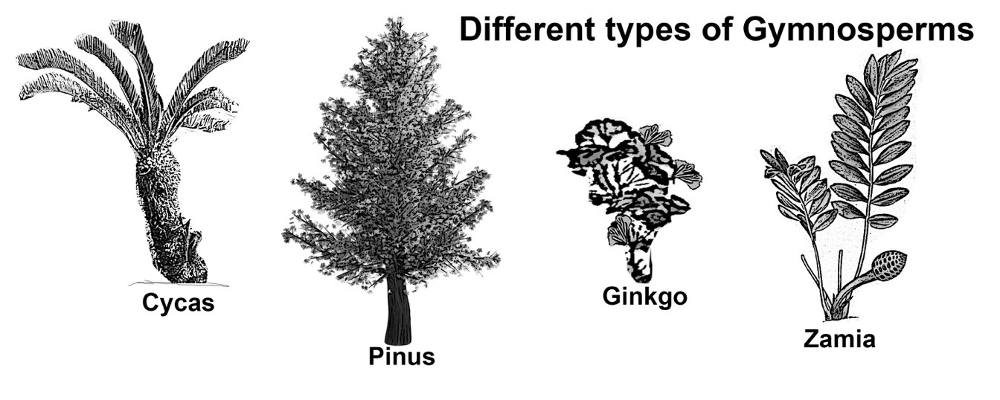
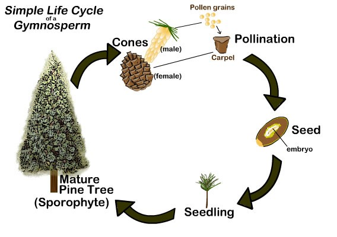
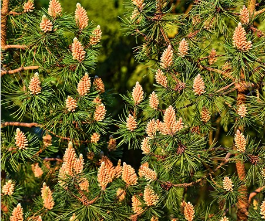

Gymnosperms
In contrast to most Angiosperms, Gymnosperms (from Greek, gym means “naked” and sperm means “seed”) do not have flowers. Gymnosperms are plants that produce their seeds in cones.
-
The seeds in gymnosperms are “naked,” or are not surrounded by fruit. Their seeds are wedged between the
woody “scales” of the cones. The picture below shows a pine cone and some seeds from the pine cone (to the
right of the cone).

Gymnosperms include pine trees conifers, cycads, Ginkgo and Maidenhair trees, to name a few. (See the picture below for examples of gymnosperms.)

Conifers are one type of gymnosperm, plants that produce seeds in cones. Conifers are woody plants with scale-like leaves or needles (as shown in the picture below, left). Conifers include: cedars, Douglas firs, cypresses, firs, junipers, kauri, larches, pines, hemlocks, redwoods, spruces, and yews.


Life Cycle of Gymnosperms. A mature gymnosperm tree generally has both female and male cones.
What we call pine cones (see the picture above, left) are the tree's female reproductive organs. In a mature pine cone, egg cells are formed at the base of the scaly leaf-like structures (near the center of the cone). (The pinkish areas in the middle picture below show about where the eggs are.)

Gymnosperms also have male pollen-producing organs (pollen cones, shown below), which are soft and form in clusters. The male cones are located lower on the tree than female cones; this makes within-tree pollination less likely. The wind moves pollen through the air to nearby trees. Pollen that lands near an egg between the scaly leaves of a mature female pine cone will form a tunnel to the center of the egg and fertilize it.
Fertilized eggs become seeds, which contain a plant embryo. Some time later, the scaly leaves of the pine cones open up and the seeds are blown away by the wind, where (if lucky) they will grow into trees.